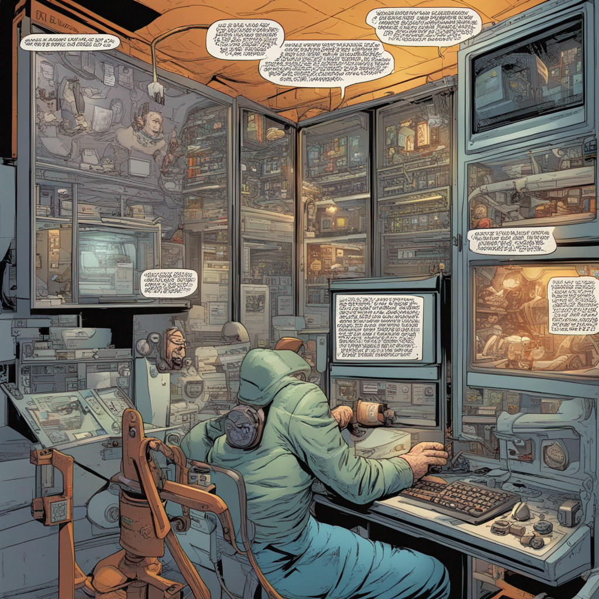

Kulturwandel
DevOps fördert eine Kultur der Zusammenarbeit und Kommunikation zwischen Entwicklern und Betriebsteams. Teams arbeiten gemeinsam an der Softwareentwicklung und Bereitstellung.
Automatisierung
Die Automatisierung von Entwicklungs- und Bereitstellungsprozessen spielt eine entscheidende Rolle. Dies umfasst das automatische Testen, Bereitstellen und Überwachen von Anwendungen.
Kontinuierliche Integration (CI) und kontinuierliche Bereitstellung
DevOps-Teams implementieren CI/CD-Pipelines, um Codeänderungen nahtlos in die Produktion zu übertragen. Dies beschleunigt die Bereitstellung und reduziert das Fehlerrisiko.
Monitoring und Feedback
Die Überwachung von Anwendungen in Echtzeit ermöglicht es Teams, Probleme schnell zu erkennen und zu beheben. Feedbackschleifen zwischen Entwicklung und Betrieb sind entscheidend.